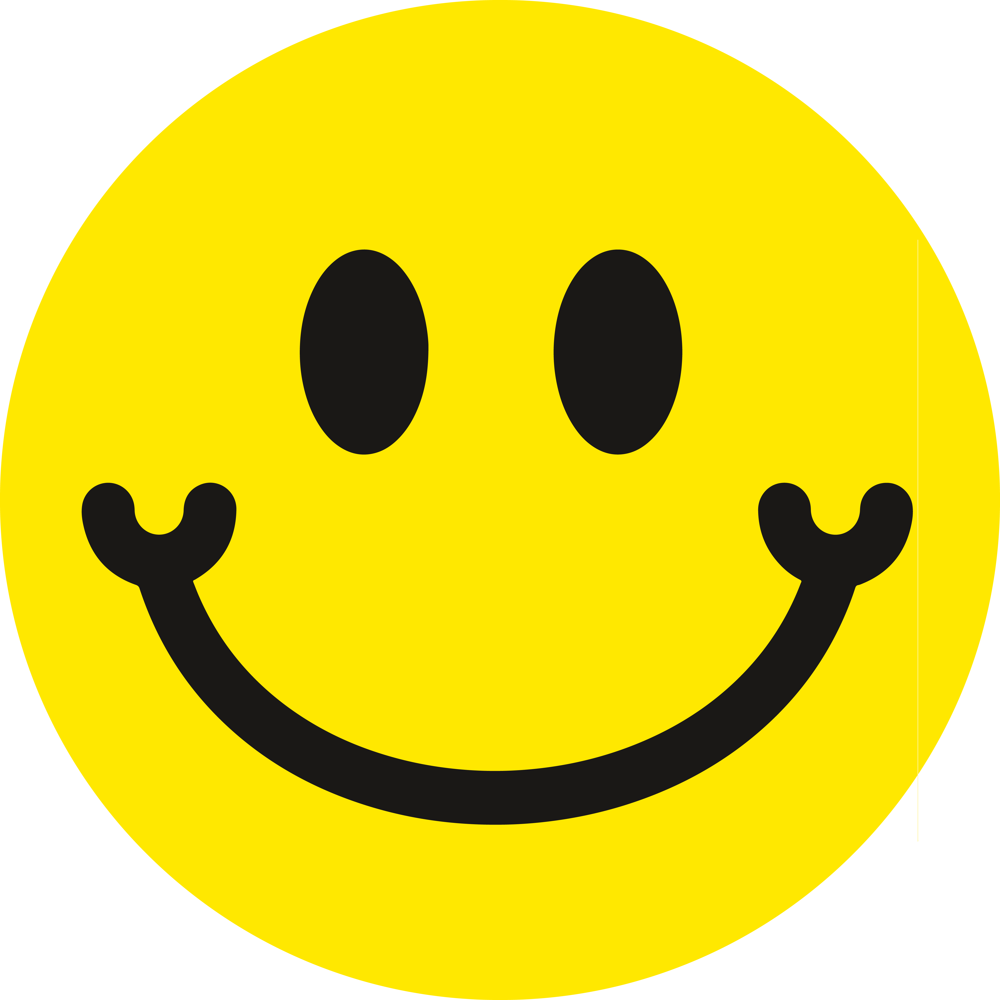

<!DOCTYPE html>
<html lang="fr">

<head>
  <meta charset="UTF-8">
  <meta name="viewport" content="width=device-width, initial-scale=1.0">
  <title>GR10</title>
  <link rel="stylesheet" href="https://unpkg.com/leaflet@1.6.0/dist/leaflet.css" integrity="sha512-xwE/Az9zrjBIphAcBb3F6JVqxf46+CDLwfLMHloNu6KEQCAWi6HcDUbeOfBIptF7tcCzusKFjFw2yuvEpDL9wQ==" crossorigin="" />
  <style>
    html,
    body {
      margin: 0;
      padding: 0;
      height: 100%;
      overflow: hidden;
    }

    #map {
      height: 100%;
      width: 100%;
    }

    .leaflet-marker-icon,
    .leaflet-popup {
      pointer-events: none;
    }

    .leaflet-interactive {
      pointer-events: none;
    }

    .custom-icon {
      background-color: #333333;
      border-radius: 50%;
      display: block;
      width: 10px;
      height: 10px;
    }

    .custom-attribution {
      background: white;
      padding: 5px;
      border-radius: 3px;
      font-size: 12px;
      color: #333;
      z-index: 1000;
      text-align: right;
      bottom: 0;
      right: 0;
      margin: 0;
    }

    .custom-attribution a {
      color: #333;
      text-decoration: none;
    }

    .custom-attribution a:hover {
      text-decoration: underline;
    }

    .rotating-icon img {
      animation: spin 5s linear infinite;
      width: 64px;
      height: 64px;
      pointer-events: none;
    }

    @keyframes spin {
      0% {
        transform: rotate(0deg);
      }

      100% {
        transform: rotate(360deg);
      }
    }

    .leaflet-container {
      user-select: none;
      -webkit-user-select: none;
      -moz-user-select: none;
      -ms-user-select: none;
    }

    .leaflet-container {
      touch-action: none;
    }
  </style>
</head>

<body>
  <div id="map"></div>

  <script src="https://unpkg.com/leaflet@1.6.0/dist/leaflet.js" integrity="sha512-gZwIG9x3wUXg2hdXF6+rVkLF/0Vi9U8D2Ntg4Ga5I5BZpVkVxlJWbSQtXPSiUTtC0TjtGOmxa1AJPuV0CPthew==" crossorigin=""></script>
  <script>
    const popupTexts = [
      "Coucou !", "Qui va avoir le plus d'ampoules ?", "Tout va bien tant que Téo a du saucisson...", "Clarisse ronfle trop, horrible les bivouacs", "On serre les fesses pour éviter un max d'orage", "Si vous voyez quelqu'un parler à un caillou, ne vous inquiétez pas, c'est juste Téo qui se parle pour se motiver !", "Les paysages sont magnifiques… dommage qu'on ne les voie qu'à travers nos larmes de sueur.", "Si vous entendez des cris de désespoir, c’est juste Clarisse en train de chercher du chocolat.", "On compte les jours comme les kilomètres : on ne sait jamais si on doit rire ou pleurer !", "On vous conseille de ne pas trop regarder les cartes : chaque fois qu’on le fait, le GR10 semble se rallonger mystérieusement.", "Bzz bzzz les moustiques...", "On rêve d'une douche !", "ON VEUT UNE PIZZA.", "Téo pète trop dans la tente."
    ];
    // Fonction pour obtenir un texte aléatoire
    function getRandomPopupText() {
      const randomIndex = Math.floor(Math.random() * popupTexts.length);
      return popupTexts[randomIndex];
    }
    // Initialisation de la carte
    const map = L.map('map').setView([42.9, 0.65], 5); // Vue initiale
    L.tileLayer('https://cartodb-basemaps-{s}.global.ssl.fastly.net/light_all/{z}/{x}/{y}.png', {
      maxZoom: 15,
      minZoom: 7
    }).addTo(map);
    // Retrait du contrôle d'attribution par défaut
    const defaultAttributionControl = map.attributionControl;
    if (defaultAttributionControl) {
      map.removeControl(defaultAttributionControl);
    }
    // Contrôle d'attribution personnalisé
    const customAttributionControl = L.control({
      position: 'bottomright'
    });
    customAttributionControl.onAdd = function() {
      const div = L.DomUtil.create('div', 'custom-attribution');
      div.innerHTML =
        '<a href="https://www.instagram.com/teorpkt" target="_blank">@teorpkt</a> | Crédits: <a href="https://www.openstreetmap.org/" target="_blank">OpenStreetMap</a> / <a href="https://www.cartodb.com/locations/" target="_blank">CartoDB</a> / <a href="https://leafletjs.com/" target="_blank">Leaflet</a>';
      return div;
    };
    customAttributionControl.addTo(map);
    const apiUrl = 'https://script.google.com/macros/s/AKfycbyCQthvDiyh-DryYVVQP6dKYjSIOnpzwfj4RE_Qjyy_vpZbSjjVJEFHR0OXYXOCpayL/exec';
    fetch(apiUrl)
      .then(response => {
        if (!response.ok) {
          throw new Error('Erreur HTTP! Statut: ' + response.status);
        }
        return response.json();
      })
      .then(data => {
        if (Array.isArray(data) && data.length > 0 && data[0].hasOwnProperty('lat') && data[0].hasOwnProperty('lng')) {
          const latlngs = data.map(point => [point.lat, point.lng]);
          const lastPoint = latlngs[latlngs.length - 1];
          // Centrage et zoom sur le dernier point
          map.setView(lastPoint, 10); // Vous pouvez ajuster le niveau de zoom (10 ici)
          const lastIcon = L.divIcon({
            className: 'rotating-icon',
            html: '',
            iconSize: [64, 64],
            iconAnchor: [32, 32]
          });
          latlngs.forEach((latlng, index) => {
            const icon = index === latlngs.length - 1 ? lastIcon : L.divIcon({
              className: 'custom-icon',
              iconSize: [10, 10]
            });
            const marker = L.marker(latlng, {
              icon: icon,
              interactive: index === latlngs.length - 1
            }).addTo(map);
            if (index === latlngs.length - 1) {
              marker.on('click', function() {
                const popupText = getRandomPopupText();
                L.popup({
                    offset: [0, -48]
                  })
                  .setLatLng(latlng)
                  .setContent(popupText)
                  .openOn(map);
              });
            }
          });
          L.polyline(latlngs, {
            color: '#DD4A25',
            weight: 3,
            interactive: false
          }).addTo(map);
        }
      });
  </script>
</body>

</html>
